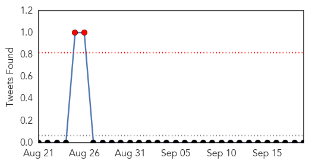
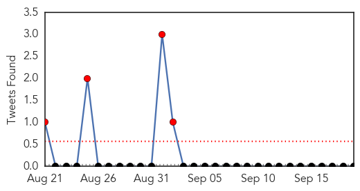

MERS
30-Day Web Trend
0 alerts, 0 warnings
30-Day Twitter Trend
2 alerts, 0 warnings

Article Locations

Article Confidences

Top Articles:
Top Tweets:
- 0.650
- AFD Blog `Saudi MOH Reports 3rd MERS Case From Jeddah This Week' MERS-CoV http://t.co/NF0Cc7GeYQ
Influenza
30-Day Web Trend
3 alerts, 0 warnings

30-Day Twitter Trend
4 alerts, 0 warnings

Article Locations
Article Confidences

Top Articles:
- 0.997
- With Flu Season on Our Doorstep, Montana Health Officials Urge Residents to Get Vaccinated
- 0.989
- Time for influenza vaccination, CDC says
- 0.976
- KFBB.com News, Sports and Weather
- 0.945
- Rapid diagnosis kit will take five minutes to test if you've really got the flu
- 0.906
- Stop butting heads on masks: MILLROY
- 0.821
- Clearing up Flu Misconceptions ahead of Season
- 0.813
- Penn State Animal Diagnostic Lab among first lines of defense versus avian flu
- 0.755
- Investigating Influenza: Schools Serve as Early Warning System for Communities
- 0.644
- BACH prepares to provide flu vaccine in multiple venues
Top Tweets:
-
No tweets found for Sep 19, 2015